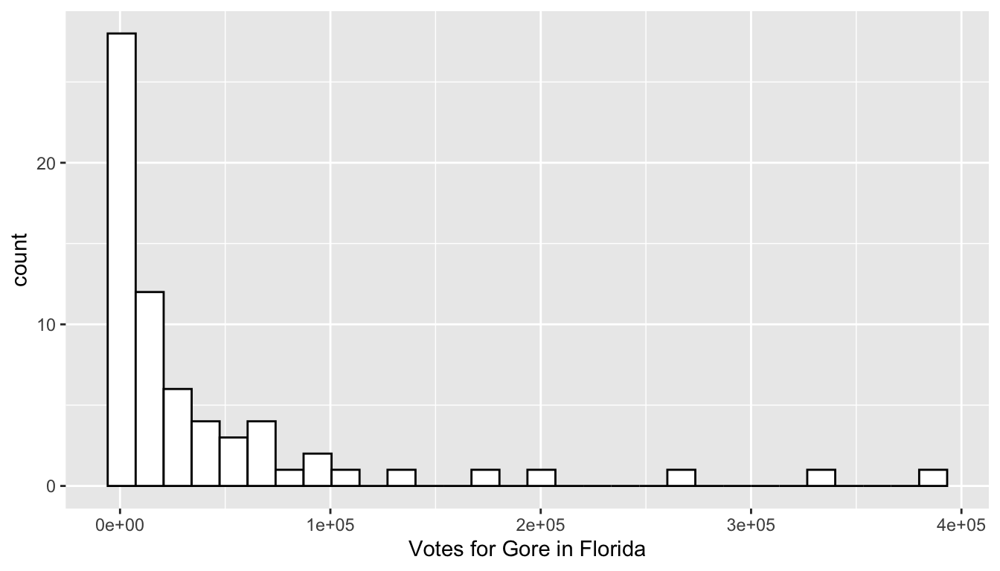
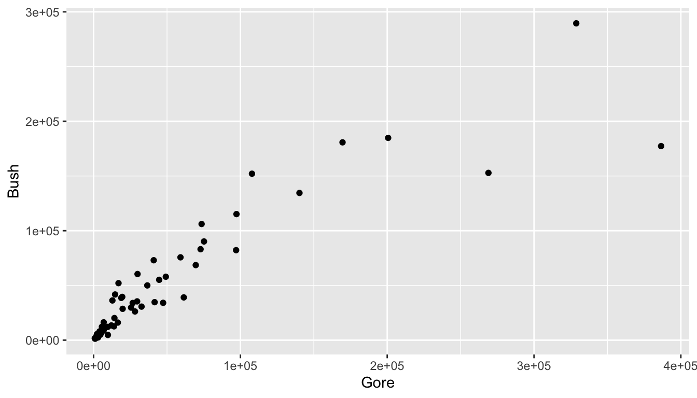
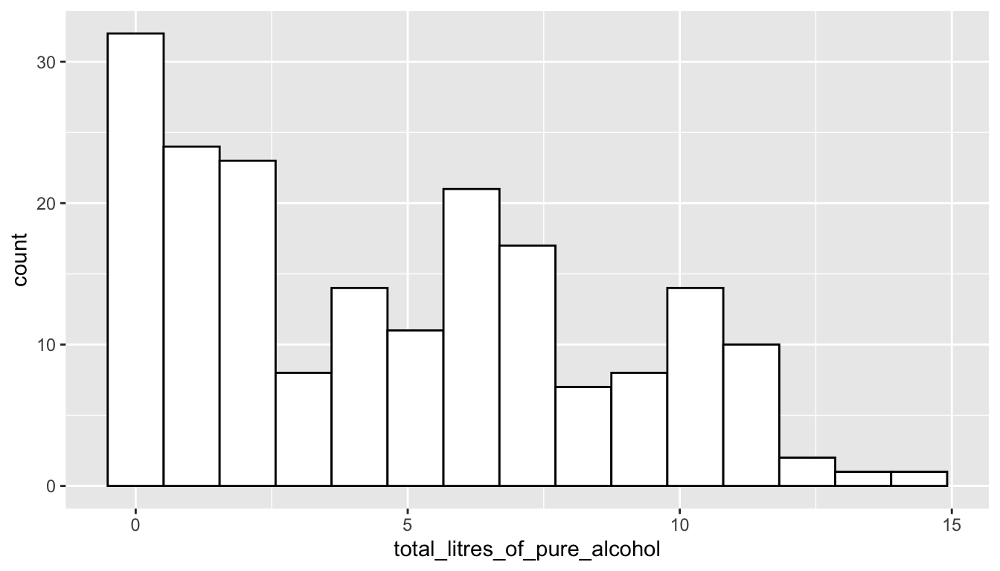

install.packages("tidyverse")1 Getting Started
Goals:
Download
RandR StudioUse
Quartoand code chunksLoad in data to
R StudioRun code and change a few things within that code
Correct some common errors when running code in
R
1.1 Installation
In this section, we will work on installing R and R Studio to your personal laptop. The following videos provide instructions on how to install R and R Studio to your laptop computer. It will be easiest if you complete all of these steps consecutively in one sitting.
- Watch and follow along with a video on installing R (or a captioned version).
- starting link: https://posit.co/download/rstudio-desktop/. (scroll down and click the link on the left-hand side of the page that says “Download and Install R”). Note that this webpage has changed since the posted video was made so the steps do not line up exactly, but, it’s actually much easier to follow along with on this updated webpage.
- Watch and follow along with a video on installing R Studio (or a captioned version).
- starting link: https://posit.co/download/rstudio-desktop/
- Watch and follow along with a video on installing R packages and making an R project (or a captioned version).
1.2 Intro to R and R Studio
R is a statistical computing software used by many statisticians as well as professionals in other fields, such as biology, ecology, business, and psychology. The goal of Week 0 is to provide basic familiarity with R and Quarto, which we will be using for the entire semester.
1.2.1 Installing R and R Studio
The R Studio server is a computer that is set-up to carry out any R-based analyses for students with remote access to the computer (in our case, through SLU Login credentials). It might be helpful to think about the server as a large machine with no keyboard and no screen: it’s only purpose is to execute the code. You may have used the R Studio server in a different stats course. The server does have some benefits, such as
using the server ensures that we are all using the same version of
R. In theory, if one person gets an error, then everyone should get that same error.installing
RandR Studioon your personal device is much easier after you’ve had some experience using it through the server.you don’t need a computer that is capable of running
Rto use the server (you can use a tablet or a Chromebook since the server does all of the actual computation).
We, however, will move away from the server and install R and R Studio on our own devices. Though the server does have some advantages, there are also some disadvantages:
you won’t have your SLU login forever, so, if you wanted to use
Rpost graduation, you’d need to know how to install it.you haven’t had experience installing
Rpackages. This is quite easy to do, but I’ve installed all necessaryRpackages on the server for us so you haven’t had to worry about this step.the server requires good Internet access and also has the potential to crash.
1.2.2 Creating an R Project
After you have both R and R Studio installed, open R Studio in your Applications. Create a new folder on your Desktop (or some other place that is easy for you to access and remember). Make sure the folder name has no spaces in it.
Then, in R Studio, create an R Project by Clicking File -> New Project -> Existing Directory. Navigate to the DATA234 folder you made, and click Create Project. You should see a new window of R Studio open up.
Finally, we want to create a new Quarto file by clicking File -> New File -> Quarto Document. You can give your new Quarto file a title if you want, and then click okay.
We are also going to change one option routinely in our Quarto files. Change the first few lines of the file to be something like:
---
title: "Your Title"
author: "Your Name"
format:
html:
embed-resources: true
---
Note
The embed-resources: true option ensures that all figures, images, tables, etc. are contained in the one .html file, which is important because, for quizzes and exercises, you will typically only turn in the .html file.
Important
Before moving on, click the Render button in the top-left window at the top of the menu bar. Make sure that the file renders to a pretty-looking .html file. The newly rendered .html file can now be found in your folder with your R project.
1.3 What are R, R Studio, and Quarto?
The distinction between the 3 will become more clear later on. For now,
Ris a statistical coding software used heavily for data analysis and statistical procedures.R Studiois a nice IDE (Integrated Development Environment) forRthat has a lot of convenient features. Think of this as just a convenient User Interface.Quartoallows users to mix regular Microsoft-Word-style text with code. The.qmdfile ending denotes anQuartofile.Quartohas many options that we will use heavily throughout the semester, but there’s no need to worry about these now.
1.3.1 R Packages and the tidyverse
You can think of R packages as add-ons to R that let you do things that R on its own would not be able to do. If you’re in to video games, you can think of R packages as extra Downloadable Content (DLC). But, unlike most gaming DLC, R packages are always free and we will make very heavy use of R packages.
The tidyverse is a series of R packages that are useful for data science. In the order that we will encounter them in this class, the core tidyverse packages are:
-
ggplot2for plotting data -
dplyrfor data wrangling and summarizing -
tidyrfor data tidying and reshaping -
readrfor data import -
tibblefor how data is stored -
stringrfor text data -
forcatsfor factor (categorical) data -
purrr, for functional programming, the only one of these core 8 that we won’t get to use
We will use packages outside of the core tidyverse as well, but the tidyverse is the main focus.
1.3.2 Installing R Packages
On the R Studio server, either myself or one of the other statistics faculty members have installed all packages that we’ve needed to use on the server globally. However, if you want to use a package that isn’t installed on the server, or, you want to use a package using R Studio on your own personal computer, you need to install it first.
Important
Installation only needs to happen once (or until you upgrade R, which usually doesn’t happen too often), whereas the package needs to be loaded with library() every time you open R.
The analogy of a lightbulb might be helpful. You only need to screw in the lightbulb into a socket once, but, every time you want the lightbulb to provide light, you need to flip the light switch.
In the lightbulb analogy, what does putting the lightbulb into the socket correspond to? What does flipping the light switch correspond to?
Now that you have R on your own computer, you’ll need to install all packages that you want to use (but, remember that you just need to install each package once). Try installing the tidyverse package, a collection of many useful data science packages, with:
1.4 Putting Code in a .qmd File
The first thing that we will do that involves code is to load a package into R with the library() function. A package is just an R add-on that lets you do more than you could with just R on its own. Load the tidyverse package into R by typing and running the library(tidyverse) line. To create a code chunk, click Insert -> R. Within this code chunk, type in library(tidyverse) and run the code by either
Clicking the “Run” button in the menu bar of the top-left window of
R Studioor(Recommended) Clicking “Command + Enter” on a Mac or “Control + Enter” on a PC.
Note that all code appears in grey boxes surrounded by three backticks while normal text has a different colour background with no backticks.
When you run the previous line, some text will appear in the bottom-left window. We won’t worry too much about what this text means now, but we also won’t ignore it completely. You should be able to spot the 8 core tidyverse packages listed above as well as some numbers that follow each package. The numbers correspond to the package version. There’s some other things too, but as long as this text does not start with “Error:”, you’re good to go!
Congrats on running your first line of code for this class! This particular code isn’t particularly exciting because it doesn’t really do anything that we can see.
In your R chunk, on a new line, try typing in a basic calculation, like 71 + 9 or 4 / 3, them run the line and observe the result.
So, that still wasn’t super exciting. R can perform basic calculations, but you could just use a calculator or Excel for that. In order to look at things that are a bit more interesting, we need some data.
1.5 Election Data Example
We will first use a data set on the 2000 United States Presidential election between former President George Bush and Al Gore obtained from http://www.econometrics.com/intro/votes.htm. For those unfamiliar with U.S. political elections, it is enough to know that each state is allocated a certain number of “electoral votes” for the president: states award all of their electoral votes to the candidate that receives the most ballots in that state. You can read more about this strange system on Wikipedia.
Florida is typically a highly-contentious “battleground” state. The data set that we have has the following variables, recorded for each of the 67 counties in Florida:
-
Gore, the number of people who voted for Al Gore in 2000 -
Bush, the number of people who voted for George Bush in 2000 -
Buchanan, the number of people who voted for the third-party candidate Buchanan -
Nader, the number of people who voted for the third-party candidate Nader -
Other, the number of people who voted for a candidate other than the previous 4 listed -
County, the name of the county in Florida
Read in the data set, name the data set pres_df, and take a look at the data set by running the pres_df line, which shows the first ten observations of the data set:
library(tidyverse)
pres_df <- read_csv("https://raw.githubusercontent.com/highamm/ds234_quarto/main/data_online/pres2000.csv")
pres_df
#> # A tibble: 67 × 6
#> Gore Bush Buchanan Nader Other County
#> <dbl> <dbl> <dbl> <dbl> <dbl> <chr>
#> 1 47365 34124 263 3226 751 ALACHUA
#> 2 2392 5610 73 53 26 BAKER
#> 3 18850 38637 248 828 242 BAY
#> 4 3075 5414 65 84 35 BRADFORD
#> 5 97318 115185 570 4470 852 BREVARD
#> 6 386561 177323 788 7101 1623 BROWAR
#> # ℹ 61 more rows
Note
Pay special attention to the variable names given at the top of the printed output: we’ll need to use these names when we make all of our plots. And, R is case-sensitive, meaning that we will, for example, need to use Gore, not gore.
Let’s go ahead and begin our exploration of the data by making a histogram of the number of people who voted for Gore in each county. Recall that a histogram is useful if we would like a graph of a single quantitative variable. Copy the following code to an R chunk and run the code:
ggplot(data = pres_df, aes(x = Gore)) +
geom_histogram(colour = "black", fill = "white") +
labs(x = "Votes for Gore in Florida")
We can also change some things in the code above. The following brief questions will ask you to add or change small things about the historam we created for the number of votes.
Exercise 1. What do the 1e+05, 2e+05, etc. labels on the x-axis mean?
Exercise 2. R gives us a message to “Pick a better value with binwidth” instead of the default bins = 30. Add , bins = 15 inside the parentheses of geom_histogram() to change the number of bins in the histogram.
Exercise 3. Change the colour of the inside of the bins to "darkred". Do you think that the colour of the inside of the bins maps to colour or fill? Try both!
Hint (only if you get stuck)
For the histogram, colour controls the outside lines of the bins while fill controls what gets filled in the bins.
Exercise 4. There are a couple of observations with very high vote values. What could explain these large outliers?
Exercise 5. We can also change the variable that is being plotted on the histogram. Try changing x = Gore, to x = Bush to plot a histogram of the number of votes Bush received in Florida counties.
Thus far, we’ve figured out that there a couple of counties with very large numbers of votes for Gore and very large number of votes for Bush. We don’t know the reason for this (if some counties are very democratic, very republican, or if some counties are just more populous). Do the counties that have a large number of votes for Bush also tend to have a large number of votes for Gore? And what about the other candidates: do they have any interesting patterns?
Let’s start by making a scatterplot of the number of votes for Gore and the number of votes for Bush.
Note
The geom_ for making a scatterplot is called geom_point() because we are adding a layer of points to the plot.
ggplot(data = pres_df, aes(x = Gore, y = Bush)) +
geom_point()
What patterns do you see in the scatterplot?
Now, let’s change the x variable from Gore to Buchanan. You should notice something strange in this scatterplot. Try to come up with one explanation for why the outlying point has so many votes for Buchanan.
ggplot(data = pres_df, aes(x = Buchanan, y = Bush)) +
geom_point()In trying to come up with an explanation, it would be nice to figure out which Florida county has that outlying point and it would be nice if we knew something about Florida counties. To remedy the first issue, recall that we can type View(pres_df) in the lower-left window of R Studio to pull up a spreadsheet of the data set. Once you have the new window open, click on the column heading Buchanan to sort the votes for Buchanan from high to low to figure out which county is the outlier.
Use some Google sleuthing skills to find an explanation: try to search for “2000 united states presidential election [name of outlier county]”. Write a sentence about what you find.
Hint
If nothing useful pops up in an initial search, try adding the term “butterfly ballot” to your search.
We have used the 2000 Presidential data set to find out something really interesting! In particular, we have used exploratory data analysis to examine a data set, without having a specific question of interest that we want to answer. This type of exploring is often really useful, but does have some drawbacks, which we will discuss later in the semester.
1.6 Alcohol Data Example
We will be looking at two data sets just to get a little bit of a preview of things we will be working on for the rest of the semester.
Important
Do not worry about understanding what the following code is doing at this point. There will be plenty of time to understand this in the weeks ahead. The purpose of this section is just to get used to using R: there will be more detailed explanations and exercises about the functions used and various options in the coming weeks. In particular, the following code uses the ggplot2, dplyr, and tidyr packages, which we will cover in detail throughout the first ~ 3-4 weeks of this course.
Data for this first part was obtained from fivethirtyeight at Five Thirty Eight GitHub page.
The first step is to read the data set into R. Though you have already downloaded alcohol.csv in the data zip, we still need to load it into R. Check to make sure the alcohol.csv is in the data folder in your bottom-right hand window. The following code can be copied to an R code chunk to read in the data:
read_csv("https://raw.githubusercontent.com/highamm/ds234_quarto/main/data_online/alcohol.csv")Note that we do not need the full file extension if we have the data set in an R project.
Did something show up in your console window? If so, great! If not, make sure that the data set is in the data folder and that you have an R project set up.
We would like to name our data set something so that we could easily reference it later, so name your data set using the <- operator, as in
alcohol_data <- read_csv("https://raw.githubusercontent.com/highamm/ds234_quarto/main/data_online/alcohol.csv")
Note
You can name your data set whatever you want to (with a few restrictions), but it’s generally helpful to give it a name that you will remember and can easily be typed moving forward. So, assigning the name alcohol_data makes more sense than assigning the data to a name like fjrewrjweaipjfadpgfj.
Now, if you run the line of code above where you name the data set, and run alcohol_data, you should see the data set appear:
alcohol_data
#> # A tibble: 193 × 5
#> country beer_servings spirit_servings wine_servings total_litres_of_pure…¹
#> <chr> <dbl> <dbl> <dbl> <dbl>
#> 1 Afghani… 0 0 0 0
#> 2 Albania 89 132 54 4.9
#> 3 Algeria 25 0 14 0.7
#> 4 Andorra 245 138 312 12.4
#> 5 Angola 217 57 45 5.9
#> 6 Antigua… 102 128 45 4.9
#> # ℹ 187 more rows
#> # ℹ abbreviated name: ¹total_litres_of_pure_alcoholWhat’s in this data set? We see a few variables on the columns:
-
country: the name of the country -
beer_servings: the average number of beer servings per person per year -
spirit_servings: the average number of spirit (hard alcohol) servings per person per year -
wine_servings: the average number of wine servings per person per year -
total_litres_of_pure_alcohol: the average total litres of pure alcohol consumed per person per year.
One goal of this class is for you to be able to pose questions about a data set and then use the tools we will learn to answer those questions. For example, we might want to know what the distribution of total litres of alcohol consumed per person looks like across countries. To do this, we can make a plot with the ggplot2 package, one of the packages that automatically loads with tidyverse. We might start by constructing the following plot. Reminder: the goal of this is not for everyone to understand the code in this plot, so don’t worry too much about that.
ggplot(data = alcohol_data,
mapping = aes(total_litres_of_pure_alcohol)) +
geom_histogram(colour = "black", fill = "white", bins = 15)
I now want to see where the United States (USA) falls on this distribution by drawing a red vertical line for the total litres of alcohol consumed in the United States. To do so, I’ll first use the filter() function in the dplyr package (again, we will learn about that function in detail later). Copy and paste the following lines of code into a new R chunk. Then, run the lines.
small_df <- alcohol_data |> filter(country == "USA")
ggplot(data = alcohol_data,
mapping = aes(total_litres_of_pure_alcohol)) +
geom_histogram(colour = "black", fill = "white", bins = 15) +
geom_vline(data = small_df,
aes(xintercept = total_litres_of_pure_alcohol),
colour = "red")It looks like there are some countries that consume little to no alcohol. We might want to know what these countries are:
alcohol_data |> filter(total_litres_of_pure_alcohol == 0)It looks like there are 13 countries in the data set that consume no alcohol. Note that, in the chunk above, we have to use in total_litres_of_pure_alcohol as the variable name because this is the name of the variable in the data set. Even something like spelling litres in the American English liters (total_liters_of_pure_alcohol) would throw an error because this isn’t the exact name of the variable in the data set. This is something that can be very aggravating when you are first learning any coding language.
Now suppose that we want to know the 3 countries that consume the most beer, the 3 countries that consume the most spirits, and the 3 countries that consume the most wine per person. If you’re a trivia person, you can form some guesses. Without cheating, I am going to guess (Germany, USA, and UK) for beer, (Spain, Italy, and USA) for wine, and (Russia, Poland, and Lithuania) for spirits. Let’s do beer first!
Let’s do the same thing for Wine and Spirits:
Finally, suppose that I want to know which country consumes the most wine relative to their beer consumption? Let’s first look at this question graphically. I need to tidy the data first with the pivot_longer() function from the tidyr package:
onecountry_df <- alcohol_data |>
filter(country == "Denmark")
ggplot(data = alcohol_data,
mapping = aes(x = beer_servings, y = wine_servings)) +
geom_point(alpha = 0.5) +
geom_text(data = onecountry_df, aes(label = country),
colour = "purple", nudge_y = 20) +
geom_point(data = onecountry_df, colour = "purple",
size = 2.5, shape = 1) +
geom_abline(aes(slope = 1, intercept = 0), alpha = 0.3)The x-axis corresponds to beer servings while the y-axis corresponds to wine servings. A reference line is given so with countries above the line consuming more wine than beer. We will get into how to make a plot like this later: for now, copy the code chunk and change the labeled point so that it corresponds to a country that interests you (other than Denmark). We might be able to better answer the original question numerically by computing the wine to beer ratio for each country and then ordering from the largest ratio to the smallest ratio:
Why is one of the ratios Inf?
1.6.1 Exercises
What is the shape of the distribution of total alcohol consumption? Left-skewed, right-skewed, or approximately symmetric? Unimodal or multimodal?
In the histogram of total alcohol consumption, pick a country other than the USA that interests you. See if you can change the code in the chunk that made the histogram so that the red vertical line is drawn for the country that interests you.
Hint
In the histogram of total alcohol consumption, change the fill colour of the bins in the histogram above: what should be changed in the code chunk?
In the spirit rankings, why do you think only 2 countries showed up instead of 3? Can you do any investigation as to why this is the case?
In the rankings code, what if you wanted to look at the top 5 countries instead of the top 3? See if you could change the code.
Change the wine to beer ratio code example to find the countries with the highest beer to wine consumption (instead of wine to beer consumption).
1.7 Athlete Data Example
As another example, we will look at a data set on the top 100 highest paid athletes in 2014. The athletesdata was obtained from https://github.com/ali-ce/datasets data set has information on the following variables from the 100 highest paid athletes of 2014, according to Forbes (pay includes both salary and endorsements):
-
Name(name of the athlete) -
Rank(where the athlete ranks, with 1 being the highest paid) -
Sport(the sport the athlete plays) -
endorsements(money from sponsorships from companies) -
totalpay(in millions in the year of 2014, salary + endorsements) -
salary(money from tournaments or contract salary) -
ageof athlete in 2014 -
Gender(Male or Female)
We will first read in the data set below and name it athletes. We then look at the first ten rows of the data set.
athletes <- read_csv("https://raw.githubusercontent.com/highamm/ds234_quarto/main/data_online/athletesdata.csv")
athletes
#> # A tibble: 100 × 9
#> ...1 Name Rank Sport endorsements totalpay salary age Gender
#> <dbl> <chr> <dbl> <chr> <dbl> <dbl> <dbl> <dbl> <chr>
#> 1 1 Aaron Rodgers 55 Foot… 7500000 22000000 1.45e7 31 Male
#> 2 2 Adam Scott 95 Golf 9000000 17700000 8.70e6 34 Male
#> 3 3 Adrian Gonzalez 60 Base… 400000 21500000 2.11e7 32 Male
#> 4 4 Alex Rodriguez 48 Base… 300000 22900000 2.26e7 39 Male
#> 5 5 Alfonso Soriano 93 Base… 50000 18050000 1.80e7 38 Male
#> 6 6 Amar'e Stoudem… 27 Bask… 5000000 26700000 2.17e7 32 Male
#> # ℹ 94 more rowsThere are many different interesting questions to answer with this data set. First, we might be interested in the relationship between athlete age and salary for the top 100 athletes. Recall from an earlier stat course that one appropriate graphic to examine this relationship is a scatterplot:
ggplot(data = athletes, mapping = aes(x = age, y = salary)) +
geom_point() +
geom_smooth(se = FALSE)Do you see anything strange with the scatterplot? What do you think the y-axis tick labels of 2.5e+07, 5.0e+07, etc. mean?
Now let’s see if we can count the number of athletes in the Top 100 that are in my personal favourite sport, Tennis:
It looks like there are 6 athletes: we can see who they are and sort them by their Rank with:
athletes |>
filter(Sport == "Tennis") |>
arrange(Rank)
#> # A tibble: 6 × 9
#> ...1 Name Rank Sport endorsements totalpay salary age Gender
#> <dbl> <chr> <dbl> <chr> <dbl> <dbl> <dbl> <dbl> <chr>
#> 1 82 Roger Federer 7 Tenn… 52000000 56200000 4.20e6 33 Male
#> 2 78 Rafael Nadal 9 Tenn… 30000000 44500000 1.45e7 28 Male
#> 3 72 Novak Djokovic 17 Tenn… 21000000 33100000 1.21e7 27 Male
#> 4 64 Maria Sharapova 34 Tenn… 22000000 24400000 2.40e6 27 Female
#> 5 60 Li Na 41 Tenn… 18000000 23600000 5.6 e6 32 Female
#> 6 89 Serena Williams 55 Tenn… 11000000 22000000 1.10e7 33 FemaleFinally, let’s see if we can compare the ratio of endorsements (from commercials and products) to salary of professional athletes in the Top 100 in 2 sports: Football (referring to American Football) and Basketball. Recall from an earlier Stat class that we might want to use side-by-side boxplots to make this comparison since we have one categorical variable (Sport Type) and one quantitative variable (Ratio of Endorsements to Salary).
football_basketball <- athletes |>
filter(Sport == "Football" | Sport == "Basketball")
ggplot(data = football_basketball,
aes(x = Sport, y = endorsements / salary)) +
geom_boxplot() +
labs(y = "Endorsements / Salary")In the graph, an endorsements / salary ratio of 1 indicates that the person makes half of their overall pay from endorsements and half of their overall pay from salary.
Which sport looks like it tends to receive a larger proportion of their overall pay from endorsements for athletes in the top 100?
1.7.1 Exercises
Instead of looking at the relationship between age and salary in the top 100 athletes of 2014, change the plot to look at the relationship between age and endorsements. What would you change in the code above? Try it!
Pick a
Sportother than Tennis and see if you can count the number of athletes in the top 100 in that sport as well as sort them by Rank.
Caution
Not all sports will have athletes in the Top 100.
How many athletes are in the top 100 in the sport that you chose?
In the
endorsements / salaryexample, change one of the sports to the sport of your choice and make a comparison. Which sport tends to receive a larger proportion of their overall pay from endorsements.What qualification might you want to make about your statement in the previous exercise? (Is this a random sample of athletes from each sport? Why does that matter?).
In the side-by-side boxplots comparing the endorsements to salary ratio of two different sports, I’ve changed the y-axis label above to be Endorsements / Salary using the
labs(y = "Endorsements / Salary")statement. Try changing the x-axis label to something else. What do you think you would need to add to the plot?
1.8 Finishing Up: Common Errors in R
We will now talk a little bit about getting errors in R and what can be done to correct some common errors.
You may have encountered some errors by this point in the document. Let’s go over a few common errors as well as discuss how to comment your code.
- A missing parenthesis: any open parenthesis
(needs to close). Try running the following code chunk without fixing anything.
ggplot(data = athletes, aes(x = Sport, y = salary) +
geom_boxplot()Notice in your bottom-left window that the > symbol that starts a line changes to a +. This is generally bad!! It means that you forgot to close a parenthesis ) or a quote (' or "). No code will run since R thinks you are still trying to type something into a function. To fix this issue, click your cursor into the bottom-left window and press Esc. Then, try to find the error in the code chunk.
- Can you find the missing closing parenthesis above?
- Missing Comma. Try running the following code chunk without fixing anything.
ggplot(data = athletes aes(x = Sport, y = salary)) +
geom_boxplot()R gives you an “Error: unexpected symbol in ….”. Oftentimes, this means that there is a missing comma or that you spelled a variable name incorrectly.
- Can you find the missed comma above?
- Capitalization Issues
athletes |> filter(sport == "Tennis")In the original data set, the variable Sport is capitalized. Not capitalizing it means that R won’t be able to find it and proclaims that “object sport not found”.
- Forgetting Quotes. Character strings need to have quotation marks around them. We will discuss more of this later, but graph labels and titles need to have quotes around them since they don’t directly refer to columns or rows in our data set:
ggplot(data = athletes, aes(x = Sport, y = endorsements)) +
geom_boxplot() + xlab(Popularity Measure)The error for forgetting quotes is typically an “Unexpected Symbol” though this error is also given for other issues.
- Where are the quotes missing in the code chunk above?
Finally, we can add a comment to a code chunk with the # symbol (I always use double ## for some reason though). This allows you to type a comment into a code chunk that isn’t code:
## this is a comment
## this calculation might be useful later
7 * 42
#> [1] 294
Important
Comments are most useful for longer code chunks, as they allow you to remember why you did something. They also tell someone whom you’ve shared your code with why you did something.
Save this file by clicking File -> Save or by using the keyboard shortcut Command + s (or Control + s on a PC). Render this file by clicking the Render button in the top-left window. You should see a .html file pop up, if there are no errors in your code!
1.9 Your Turn
Open a new .qmd file (File -> New File -> Quarto Document -> OK) and delete the text explaining what Quarto is. Make sure that your Quarto document is embed-resources by using something like the following in the first few lines of the file:
---
title: "Your Title"
author: "Your Name"
format:
html:
embed-resources: true
---Then, complete the following exercise.
Your Turn 1. For each question, type your answer on a new line, with a line space between your answers. All of these questions should be answered outside of code chunks since your answers will all be text, not code.
What is your name and what is your class year (first-year, sophomore, junior, senior)?
What is/are your major(s) and minor(s), either actual or intended?
Why are you taking this course? (Major requirement?, Minor requirement?, recommended by advisor or student?, exploring the field?, etc.). If you are taking it for a major or minor requirement, why did you decide to major or minor in statistics or data science?
In what semester and year did you take STAT 113 and who was your professor?
Have you taken STAT 213? Have you taken CS 140?
What is your hometown: city, state, country?
Do you play a sport on campus? If so, what sport? If not, what is an activity that you do on or off-campus?
What is your favorite TV show or movie or band/musical artist?
Tell me something about yourself.
What are your expectations for this class and/or what do you hope to gain from this class?
Take a moment to scroll through the advice from students who took this course in the Spring semester of 2024. What is one piece of advice that you hope to apply to our course this semester?
Render your .qmd file into an .html file and submit your rendered .html file to Canvas.
Nice work: we will dive into ggplot() in the ggplot2 package next!